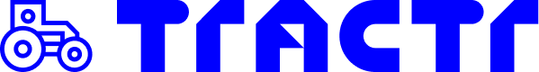
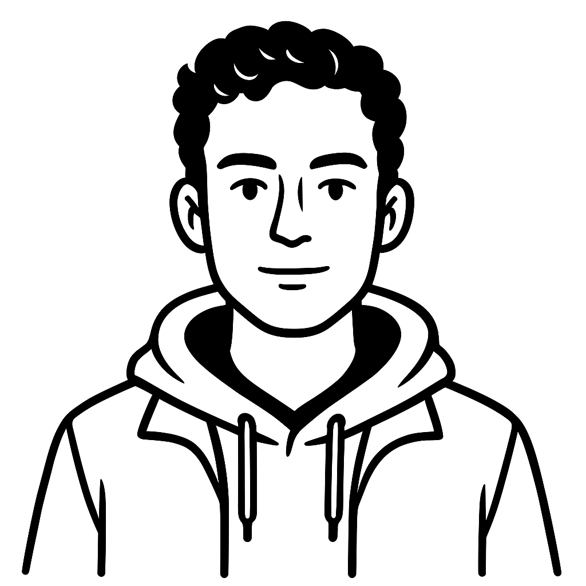
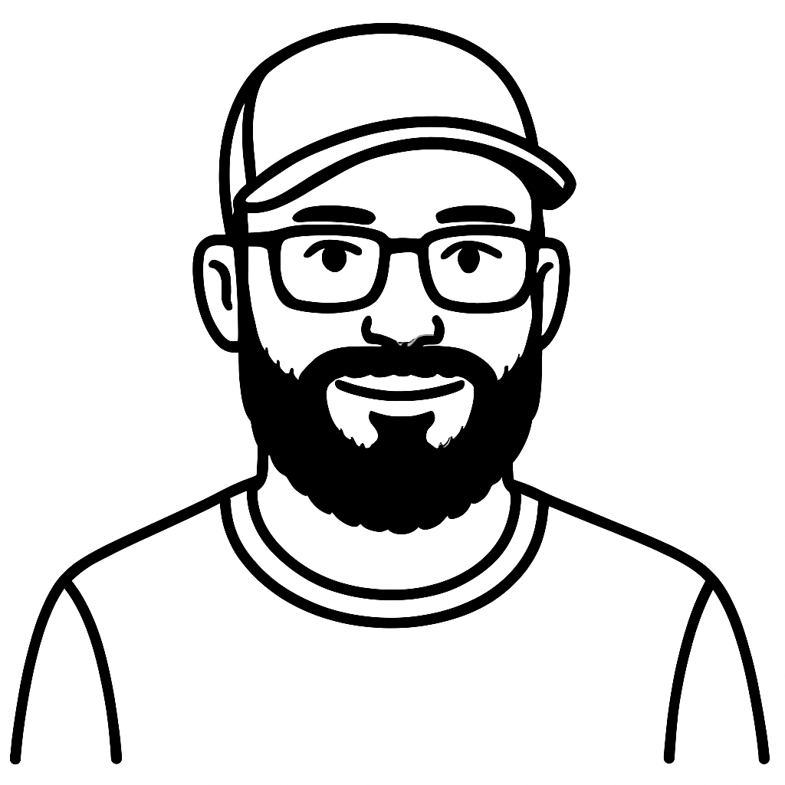

× Boscoville Plan d'amélioration DPJ-bot2. Plan d'amélioration DPJ-bot
Quatre étapes pour sécuriser le service, corriger les réponses et préparer l'ouverture au public.
2.1Rappel de la situation actuelle
La base technique est récupérable, mais trois problèmes empêchent l'ouverture au public.
Les trois blocages à lever
Du contenu externe peut être ajouté puis présenté comme provenant du manuel.
La cause de la confusion entre notions voisines est mesurée.
Confidentialité, transparence sur l'IA et situations de danger ne sont pas traitées.
2.2Plan proposé
Quatre étapes successives. Chaque étape produit un résultat utilisable avant de lancer la suivante.
| Étape | Résultat livré | Effort | Budget | Quand |
|---|---|---|---|---|
| 1. Protéger et cadrer | Écriture publique fermée, coûts et accès bornés, requêtes et citations validées. Jeu de 30 questions préparé avec votre expert. | 11,5 h | 1 725 $ Prix fixe | Semaine 1 |
| 2. Mesurer et réparer | Bancs de mesure, structure du PDF reconstruite, recherche réparée, abstention calibrée et réponses reproductibles. | 27 h | 4 050 $ Plafond | Semaine 2 |
| 3. Sécuriser et fiabiliser | Sécurité, conformité, gestion des erreurs, accessibilité, mobile et historique corrigés. | 26,5 h | 3 975 $ Plafond | Semaine 3 |
| 4. Préparer l'exploitation | Journaux, alertes, supervision, migrations, intégration continue et rapport final avant-après. | 13 h | 1 950 $ Plafond | Semaine 4 |
| Total du plan proposé | 78 h | 11 700 $ CA | 4 semaines | |
Les étapes 2 à 4 sont facturées au temps réellement passé, à 150 $ CA de l'heure, sans dépasser leur plafond sans accord écrit.
2.3Options éventuelles
Ces options ne font pas partie des 11 700 $. Elles ne sont ajoutées que si le besoin se confirme.
| Option | Quand la décider | Estimation |
|---|---|---|
| Recherche exacte par article | Si les questions juridiques restent mal servies après l'étape 2 | 225 $ |
| Modèle de reclassement spécialisé | Si la précision reste sous la cible après l'étape 2 | 375 $ |
| Routage par fiche | Si la confusion entre notions voisines persiste | 600 $ |
| Migration du modèle d'encodage | Seulement si le gain de rappel mesuré dépasse 3 points | 300 à 1 200 $ |
| Tableau de bord d'exploitation | Après l'ouverture, si les alertes ne suffisent pas | 525 $ |
| Ré-indexation sans coupure | Quand le corpus devra évoluer souvent | 375 $ |
| Comparatif de modèles de génération | Après stabilisation du corpus et de la recherche | 225 $ |
| Consolidation post-ouverture | Après l'ouverture | 4 050 $ |
| Graphe des renvois entre fiches | Après le routage par fiche | 600 $ |
| Sources postérieures à 2010 | Si Boscoville décide d'actualiser le corpus | 1 500 $ |
| Historique serveur | Après validation du volet vie privée | 1 125 $ |
2.4Calendrier et besoins
Date de démarrage à définir conjointement.
| Période | Travail prévu |
|---|---|
| Semaine 1 | Protéger le service et cadrer les 30 questions avec votre expert. |
| Semaine 2 | Mesurer la situation, puis réparer le corpus, la recherche et l'abstention. |
| Semaine 3 | Corriger la sécurité, la conformité, la fiabilité, l'accessibilité et l'usage sur téléphone. |
| Semaine 4 | Préparer l'exploitation, mesurer les gains et réaliser la recette avec votre expert. |
| À partir de la semaine 5 | Ouverture envisageable si les seuils et le volet juridique sont validés. |
Ce dont nous avons besoin
| Accès | Niveau | Quand |
|---|---|---|
| Compte du fournisseur de modèle | Administration de la facturation | En priorité, le plafond de dépense est la seule protection immédiate |
| Dépôt de code | Écriture et administration | Démarrage |
| Hébergement applicatif | Membre du projet | Démarrage |
| Base de données | Propriétaire | Démarrage |
| Contact juridique et responsable des communications | Sans objet | Immédiat |
| PDF source, édition exacte et droits de rediffusion | Sans objet | Semaine 1 |
| Expert du domaine | Sans objet | Semaine 1 |
La sollicitation de votre expert, 12 à 16 heures
Aucun accès technique requis. Nous fournissons un tableau prérempli à valider ou corriger.
| Jalon | Format | Durée | Objet |
|---|---|---|---|
| Cadrage | Visioconférence | 2 h | Valider les 30 questions : réalisme, notions réellement confondues sur le terrain, exceptions, manques |
| Vérité terrain | Asynchrone | 4 h | Pages, fiches et articles attendus, éléments obligatoires de chaque réponse, cas où le système doit se taire |
| Revue | Asynchrone et visioconférence | 6 h | Noter 30 réponses : exactitude, nuances, citations, risque d'usage |
| Acceptation | Visioconférence | 2 h | Signature des seuils, validation des avertissements, arbitrage sur la date d'édition du manuel |
Sans expert sous deux semaines, nous produisons une vérité terrain provisoire. Les premiers résultats restent alors indicatifs.
2.5Conditions commerciales
| Point | Condition |
|---|---|
| Prix | Étape 1 au prix fixe de 1 725 $ CA. Étapes 2 à 4 au temps passé, à 150 $ CA de l'heure, avec les plafonds du plan. |
| Facturation | Acompte à la commande, solde à la livraison. |
| Dépassement | Aucune heure au-delà d'un plafond sans accord écrit. |
| Suivi | Point hebdomadaire sur l'avancement, le temps passé et les décisions à prendre. |
| Qualité | Revue interne, tests ciblés, recette conjointe et correction des anomalies bloquantes. |
| Propriété | Le code et les outils de mesure livrés appartiennent à Boscoville. |
| Ressources TRACTR | Notre code et nos ressources techniques préexistantes sont fournis sans frais. |
| Fin du mandat | Préavis de 30 jours. Tout élargissement du périmètre passe par un avenant. |
À la charge de Boscoville
| Sujet | Décision ou dépense |
|---|---|
| Vie privée | Évaluation des facteurs relatifs à la vie privée et entente avec le fournisseur de modèle. |
| Logotype | Autorisation d'usage du logotype gouvernemental, ou retrait. |
| Infrastructure | Abonnements d'hébergement, de base de données et de fournisseur de modèle. |
| Contenu | Décision sur l'édition du manuel et droits de rediffusion du PDF. |
Prévoir environ 12 à 16 heures de disponibilité côté Boscoville, principalement pour l'expert du domaine.
2.6Prochaines étapes
| Action | Quand |
|---|---|
| 1. Plafonner les dépenses du fournisseur de modèle. | Aujourd'hui |
| 2. Ouvrir les dossiers vie privée, sous-traitance et logotype. | Cette semaine |
| 3. Valider l'étape 1 : 11,5 h, 1 725 $ CA. | À la commande |
| 4. Confirmer les étapes suivantes après la première mesure. | Semaine 2 |
2.AAnnexe : l'équipe
L'équipe qui a audité le dépôt pilotera la reprise.


2.BAnnexe : FAQ
À qui appartient le code ?
À vous. Le code, les 30 questions et les bancs de mesure restent sur votre dépôt, sans dépendance propriétaire.
Pourquoi mesurer avant de corriger ?
Pour établir une ligne de base, prouver chaque gain et déclencher les options uniquement si les chiffres le justifient.
Pourquoi commencer par la protection ?
Parce qu'elle ferme immédiatement deux risques actifs : dépenses non bornées et contenu modifiable par le public.
Et si notre expert n'est pas disponible ?
Les travaux peuvent commencer avec une vérité terrain provisoire. Les premiers résultats restent indicatifs jusqu'à sa validation.
Faut-il changer de modèle d'encodage ?
Pas avant d'avoir réparé le corpus et mesuré le résultat. Nous proposons de migrer seulement si le gain de rappel dépasse 3 points.
Qu'est-ce qui fixe la date d'ouverture ?
Surtout le volet juridique : vie privée et autorisation du logotype peuvent dépasser six semaines.
Que faire du manuel de 2010 ?
Assumer un corpus daté et le signaler, ou prévoir un modèle multi-sources. Dans les deux cas, l'édition doit être visible.
Et si une étape dépasse l'estimation ?
Aucune heure supplémentaire n'est engagée sans accord écrit.